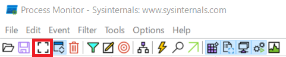
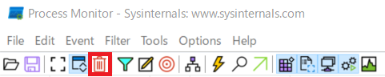

プロセスがアクセスするファイル、レジストリについての情報を記録する Process Monitor ツールによる情報採取の手順です。
以下のサイトより ProcessMonitor.zip をダウンロードして、採取対象端末に展開してください。
Process Monitor
※ ページ上部の “Download Process Monitor” をクリックしてください
採取時は一時的に負荷が発生する場合があります。なお、OS 再起動の必要はありません。
担当者よりご案内させていただきます。
procmon.exe を Administrator 権限を持つユーザー アカウントで起動します。初回起動時のみ EULA への同意を求められます。
起動後、自動的にキャプチャが開始されます。一時的に停止する場合は、Ctrl + E をキーを押すか、以下のキャプチャ ボタンをクリックします。

停止したキャプチャをクリアする場合は、Ctrl + X をキーを押すか、以下のクリア ボタンをクリックします。

キャプチャを再開する場合は、Ctrl + E をキーを押すか、キャプチャ ボタンをクリックします。
procmon.exe で [Ctrl] + [E] キーを押し、キャプチャを停止します。
[Ctrl]+[S] キーを押し、[Save To File] ダイアログ上で [Events to save:] で [All events] を選択し、任意のパスへ保存します。
保存された .PML ファイルを弊社宛に送信下さい。